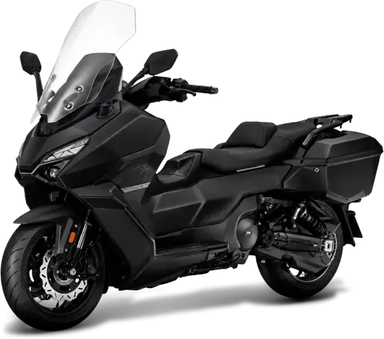
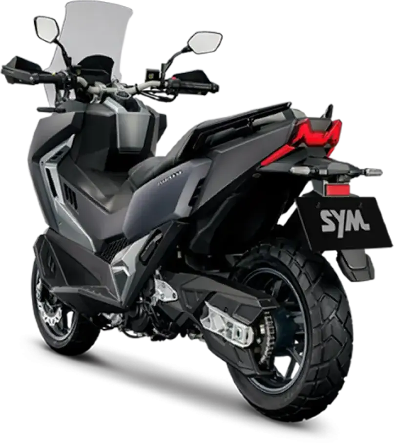
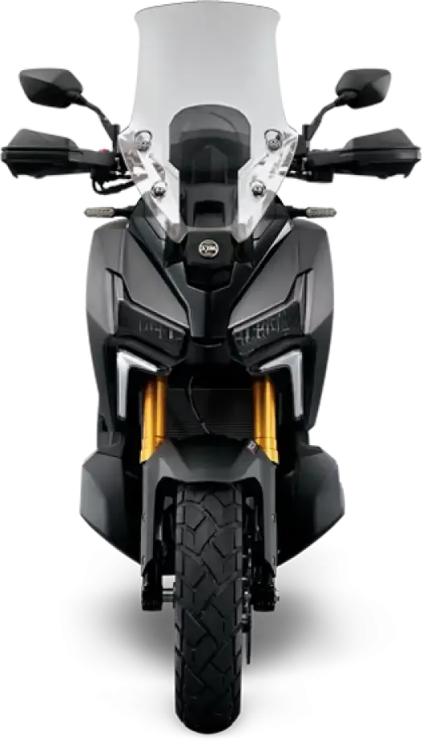
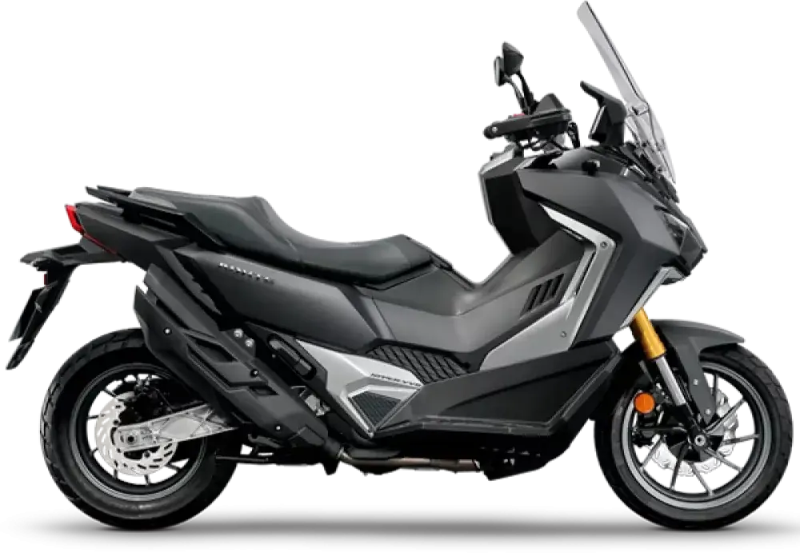

SYM
SYM TTLBT
A2 500 cc · 33,5 kW · Scooter
Propuesta de OpsPilot para Expomoto Córdoba, en revisión. No es la web oficial: expomotocordoba.es



A diferencia de la mayoría de scooters , el ADXTG 400 utiliza transmisión por cadena como las motos, ofreciendo una entrega de potencia más directa. Además, su suspensión trasera anclada al chasis y al basculante mejora el comportamiento en terrenos irregulares, mientras que su diseño permite un centro de gravedad más equilibrado , clave para una conducción ágil y estable.
El conjunto se completa con ABS Bosch 10.3 y control de tracción (TCS) desconectables , iluminación Full LED y un equipamiento pensado para todo tipo de uso: paramanos, cubrecárter, manillar ajustable, pantalla regulable sin herramientas, espacio bajo el asiento para casco integral y toma USB .
La suspensión trasera incorpora un monoamortiguador patentado por SYM con sistema de bieletas y regulación en precarga , lo que permite adaptarse fácilmente a distintas condiciones de uso y carga. Con 115 mm de recorrido y un anclaje directo al basculante y al chasis ofrece una respuesta firme, estable y precisa en todo tipo de superficies. En definitiva, el ADXTG 400 tiene cuerpo de scooter y Carácter de moto.
Sistemas diseñados para ofrecer la máxima estabilidad y confianza tanto en carretera como fuera de ella.
El ABS actúa sobre ambas ruedas para evitar bloqueos en frenadas bruscas, pero cuenta con la opción de desconectarlo en la rueda trasera , permitiendo una mayor libertad de maniobra en superficies sueltas o terrenos irregulares.
El TCS desconectable , facilita el control del ADXTG 400 en condiciones fuera de pavimento y adaptándose a las necesidades del conductor en cada situación.
Esta combinación garantiza seguridad sin sacrificar la versatilidad y el rendimient
El renovado sistema SmartKey permite gestionar funciones clave del vehículo sin necesidad de usar una llave física, como el encendido, la apertura del asiento y el acceso al depósito de combustible. Además, incorpora tecnología de detección de proximidad para activar el arranque de emergencia , el desbloqueo automático del manillar y la apertura remota del asiento.
Diseñados para ofrecer un agarre óptimo tanto en asfalto como en superficies irregulares, garantizando versatilidad, seguridad y control en todo tipo de condiciones.